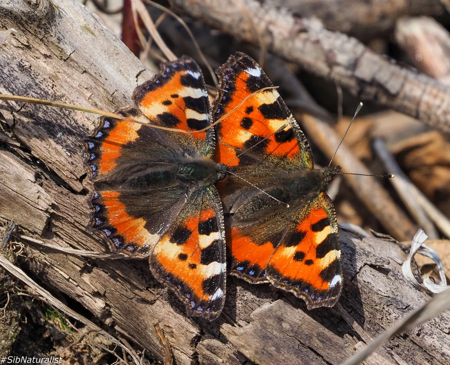

昆虫 · 动物界
荨麻蛱蝶 Aglais urticae

翅面橙红带黑斑、边缘呈齿状的小型常见蛱蝶，幼虫取食荨麻，广布欧亚大陆，是常见的花园蝴蝶之一。
- 分类
- 门节肢动物门纲昆虫纲目鳞翅目科蛱蝶科属蛱蝶属
- 栖息环境
- 花园、草地、路旁和林缘，荨麻生长的地方
- 地理分布
- 欧洲和亚洲温带地区，包括中国北方
- 保护级别
- 暂无评估
物种志
荨麻蛱蝶翅展约 4.5–6 cm，翅面橙红色，前翅前缘有黑色斑块，翅外缘黑色并带蓝色小点和黄色齿状纹，整体像一片彩色的龟甲。翅腹面颜色暗淡，停歇时像枯叶，可以躲避天敌。
它生活在花园、草地、路旁和林缘，成虫喜欢访花，也常在荨麻丛附近活动。雌蝶把卵产在荨麻叶片上，幼虫群集取食荨麻，身体黑色带细毛，化蛹后挂在植物上。荨麻蛱蝶广布欧洲和亚洲温带地区，一年发生多代，以成虫越冬。它是欧洲常见的花园蝴蝶，幼虫依赖荨麻，因此在庭院里保留一小片荨麻有助于它的繁殖。它的蛹为灰褐色，挂在荨麻的茎叶间，伪装得相当隐蔽；冬季成虫会躲在树洞和建筑物缝隙里越冬。
形态与习性
- 食性幼虫取食荨麻；成虫吸食花蜜
- 翅展约 4.5–6 cm
- 识别翅面橙红带黑斑，外缘有蓝色小点和齿状纹
- 生活史一年发生多代，以成虫越冬
- 分布欧洲和亚洲温带地区
趣味知识
- 荨麻蛱蝶的幼虫专吃荨麻，成虫却只喝花蜜。
- 它翅腹面颜色暗淡，停歇时像一片枯叶。
- 花园里留一小片荨麻，常能吸引荨麻蛱蝶来产卵。